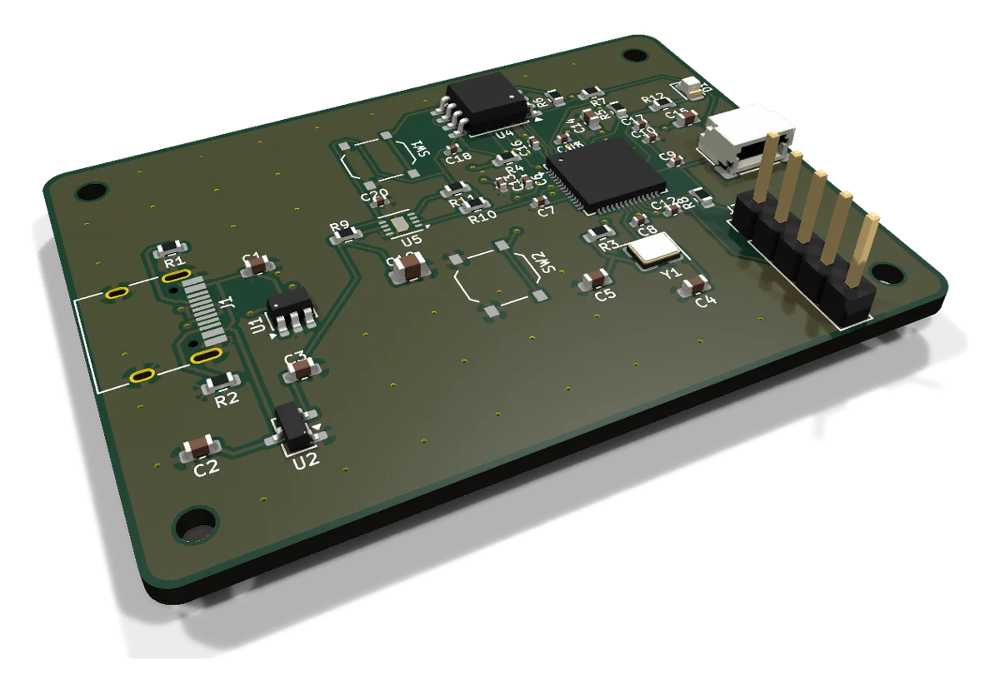
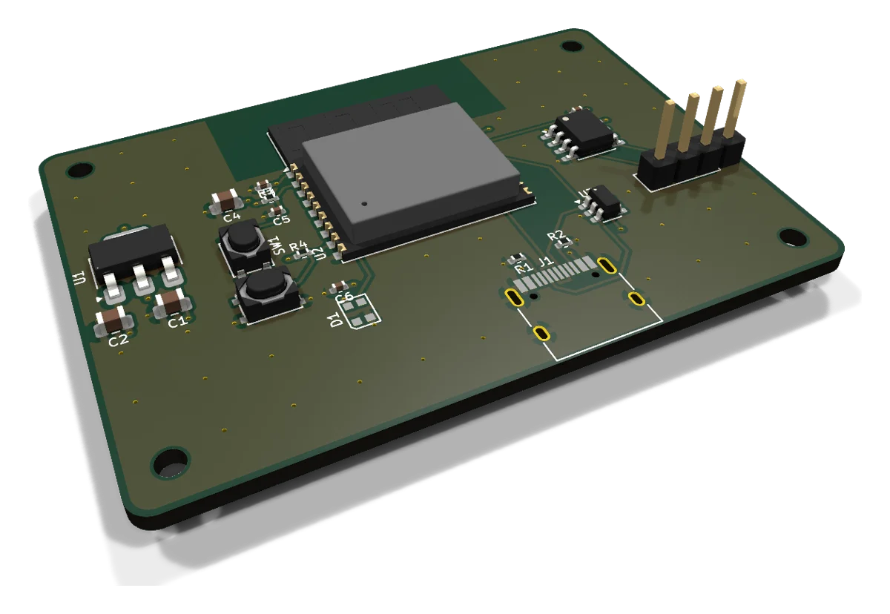
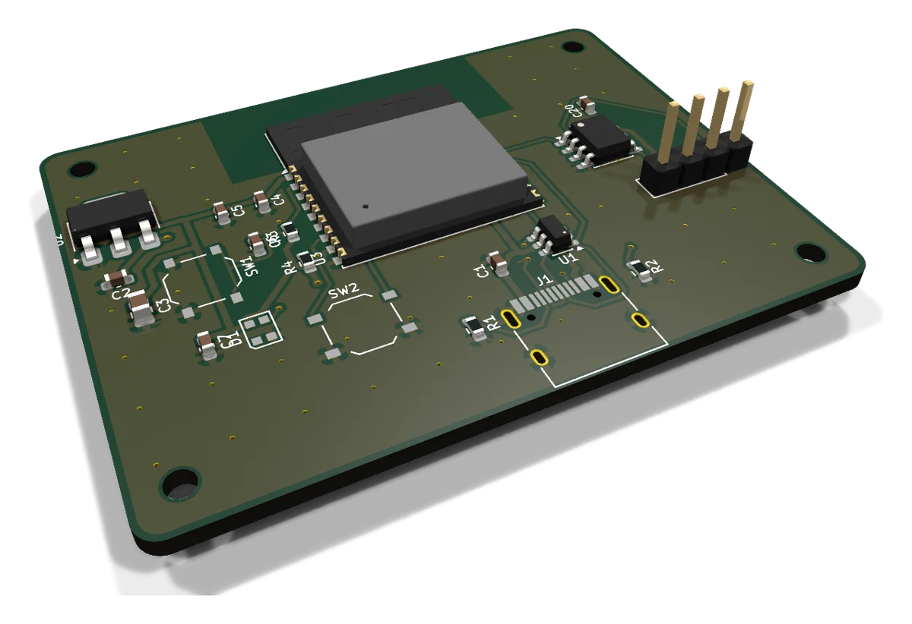
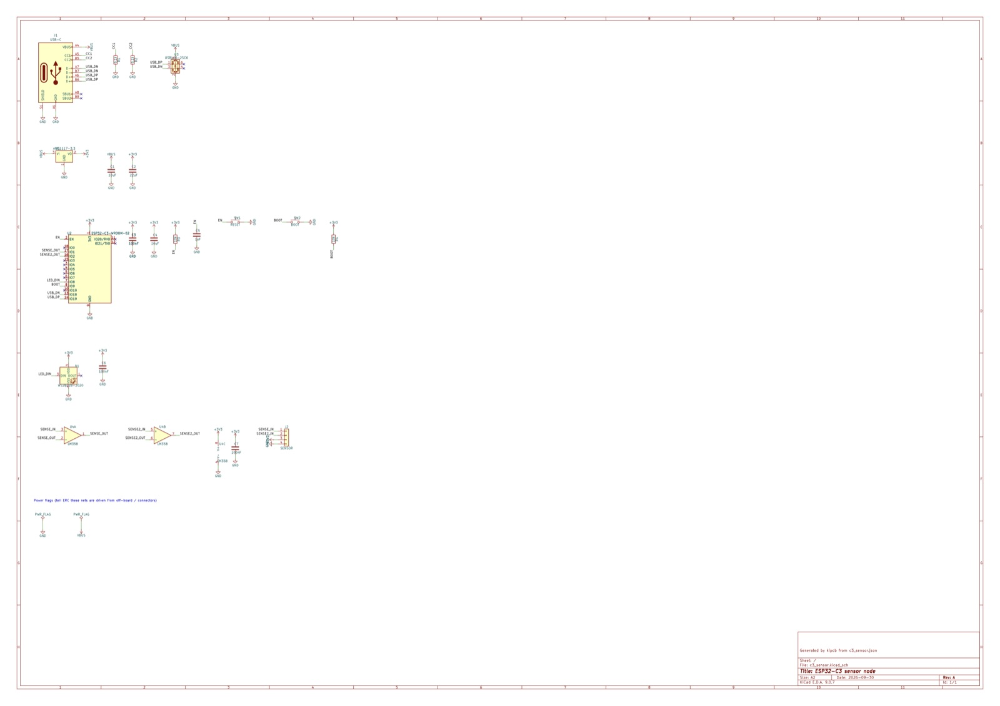
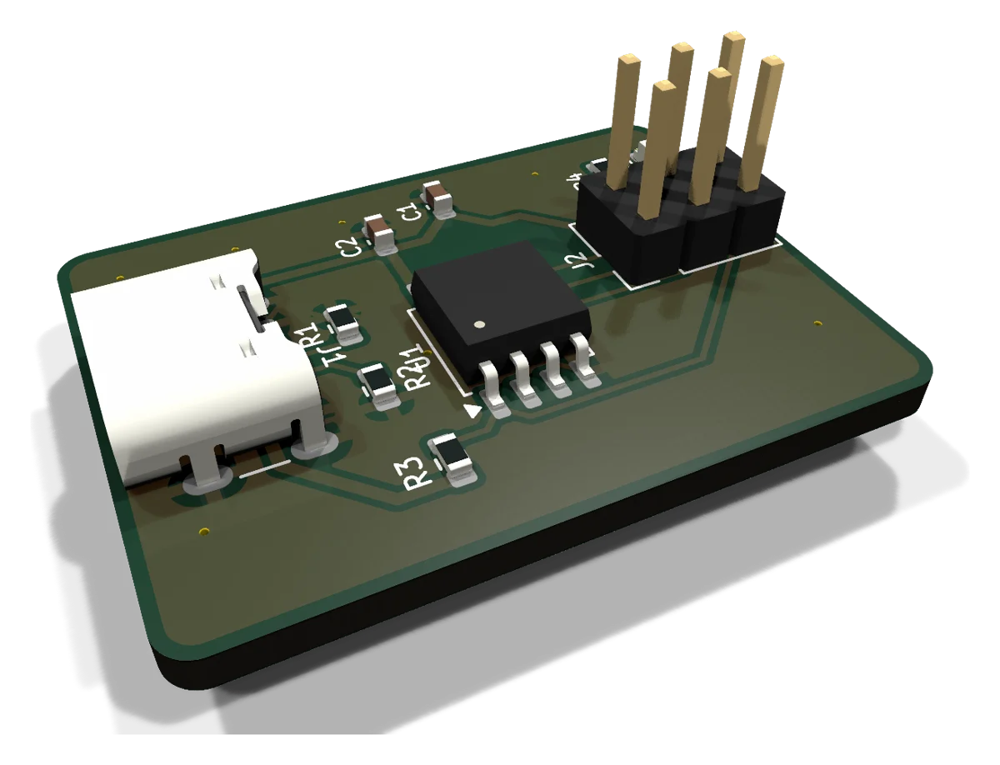

Viaduct is a Claude Code plugin that designs printed circuit boards. Say what the board should do; it picks real parts, draws the schematic, places and routes the board in KiCad, checks it, and hands you Gerbers, a BOM and a pick-and-place file.
> /viaduct:design a USB-C powered ESP32-C3 board with an RGB status LED, reset and boot buttons, and a 4-pin sensor header Asked: size, power, connectors, build method, noise Parts: ESP32-C3-WROOM-02, AMS1117-3.3, USBLC6, WS2812B, MCP6002 layers 2 (auto: only 7 of the 30 most similar real boards use 4+) build 56 x 41 mm, 2 layers (7s) route complete, 7 vias (11s) checks ERC ok, DRC ok, noise 13 pass / 0 fail READY TO ORDER: ESP32-C3 sensor node fab/ gerbers.zip bom.csv positions.csv

Examples
Each one came from a written description. Times are the total from description to manufacturing files, from the latest test run.




How it works
Every step leaves a normal KiCad 9 project you can open and change. Claude asks when a choice changes the design and says up front what will be automatic.
One round of questions: size, power, connectors and their edges, how you'll build it, anything noise-sensitive.
Verified building blocks and real parts with stock numbers. Every pin is checked against KiCad's libraries before anything is drawn.
2, 4 or 6 layers, chosen from the design's complexity and explained, or set by you.
Connectors flush to their edges, decoupling capacitors at their pins, room for chips to fan out, noisy parts away from sensitive ones.
Autorouted with ground pours and stitching, then DRC, electrical and noise checks.
Gerbers and drill files, a BOM and a pick-and-place file in JLCPCB's format, with an ordering checklist.
New in V2.5
On Auto, Viaduct compares your design with real routed boards and picks the layer count, then tells you why.
auto4 layers for BGAs, high-speed interfaces like Ethernet or DDR, or when most similar boards use 4. Otherwise 2.
2Cheapest. Right for most hobby and product boards.
4A solid ground plane and a power plane inside the board.
6Both planes plus two inner signal layers.
The 4-layer ESP32-C3 example: planes on In1 and In2, routed in 10 seconds, DRC clean.
Commands
/viaduct:designAn idea to a board ready to order.
/viaduct:reviewCheck any KiCad project before you order it.
/viaduct:inquiryAsk a question, or get feedback on a schematic or board.
/viaduct:fabGerbers, BOM, pick-and-place and an ordering checklist.
Install
Run these in Terminal on macOS or PowerShell on Windows, then start Claude Code.
claude plugin marketplace add virajrungta/viaductclaude plugin install viaduct@viaductNeeds Claude Code, KiCad 9 and Java 21+. Full setup guide ›
Free and open source. Your boards stay on your machine.